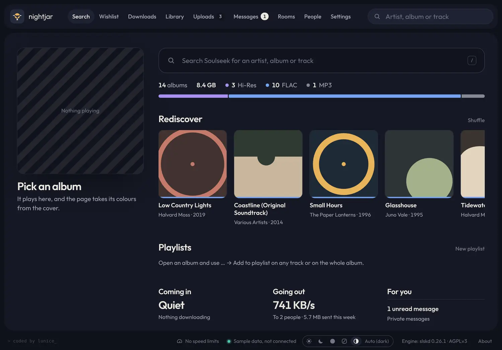
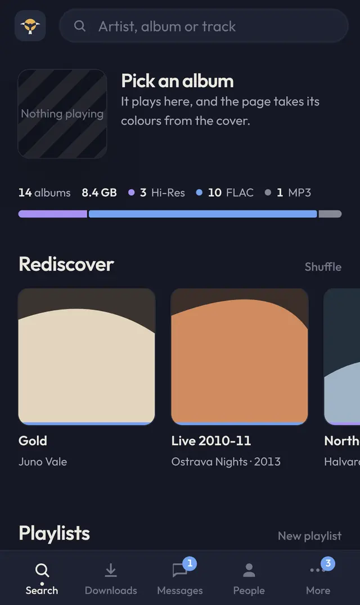
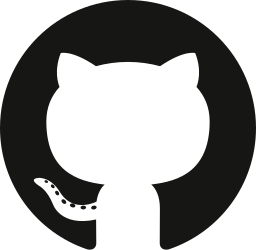

Tells real lossless from a disguised MP3
nightjar reads the spectrum of every track. An MP3 saved as FLAC stops near 16 kHz, and it says so.
04 Tidewater.flacCheck quality
0 kHz81622
UpconvertedMP3 saved as FLAC, cut at 16 kHz
nightjar finds the best copy of an album on Soulseek, checks it, files it and plays it on your PC, phone or iPad. Free for Windows 10 and 11.
Search groups results by album and stacks everyone's copies together, best first: quality, then a free slot, then speed. The colour gives the quality before you open anything. Read how search ranks copies
nightjar reads the spectrum of every track. An MP3 saved as FLAC stops near 16 kHz, and it says so.
When others share exactly the same files, each one sends different tracks, and a slow track moves to someone faster.
Soulseek is people sharing their own record collections, folder by folder. nightjar searches all of it, picks the copy worth keeping and puts it where you would look for it.
nightjar files every download by format, artist and year, and any move it makes can be undone.
nightjar is a new interface on slskd, an open source Soulseek engine. It runs as a real Windows app with its own window and an icon by the clock, and it signs every update. See slskd on GitHub
Search, download and play from your phone, iPad or another computer. Your PC does the work; the phone is a window onto it.


Anything else goes to the project's issues on GitHub, where every report gets an answer.

Ask on GitHubNo. It's a new interface on slskd, and it isn't affiliated with Soulseek, slskd or Tailscale.
No. nightjar walks you through making one the first time it starts.
No, only on Windows 10 and 11. A Mac, phone or iPad can use the nightjar on your PC.
Yes. Your PC searches, downloads and keeps the music, so nightjar has to be running.
Nothing. It's free software under the GNU AGPL 3.0, and it needs no admin rights.
It checks GitHub, downloads the new version and installs it, and only ever an update that is signed.